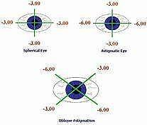

Refraction · Astigmatism
Regular astigmatism: simple, compound & mixed
Regular Astigmatism is also subdivided into:
A. Simple: One meridian is emmetropic & the other is ametropic.
- There are 2 types:
- a) Simple myopic.
- b) Simple hypermetropic.
B. Compound: Both meridians are ametropic but of the same type.
- It includes:
- a) Compound myopic.
- b) Compound hypermetropic.
C. Mixed: One meridian is myopic and the other is hypermetropic.
| Simple | Compound | |
|---|---|---|
| Myopic |
|
|
| Hypermetropic |
|
|
